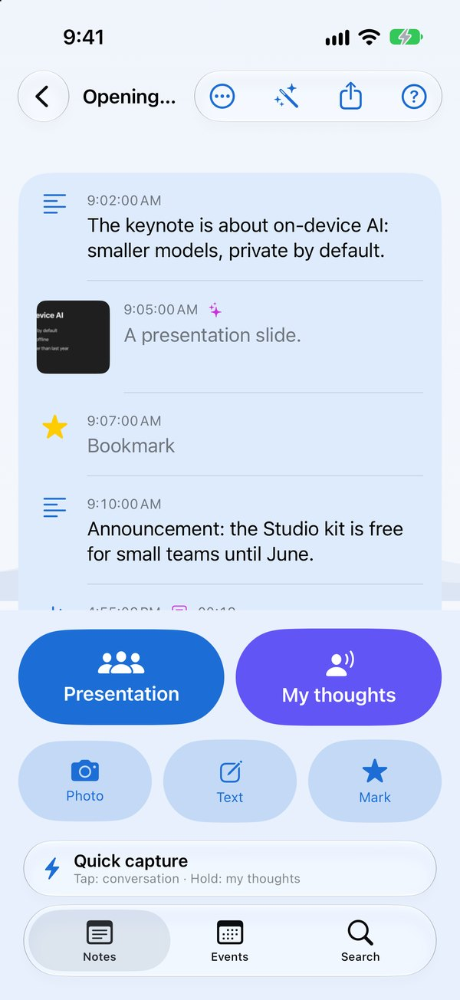
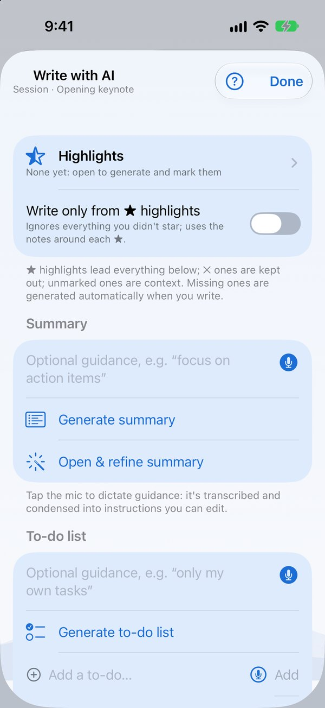
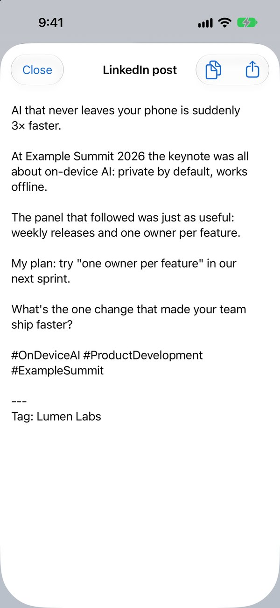
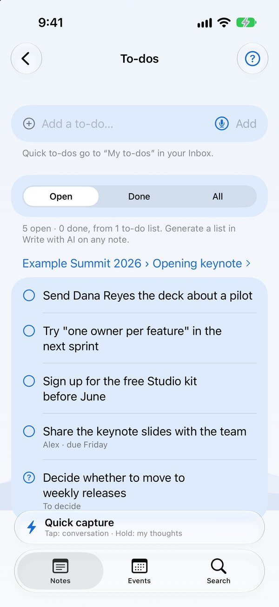

Cairn Notes for Creators · iPhone
Capture the talk.
Publish the takeaway.
Record talks and meetings, snap the slides, mark the moments that matter. Cairn turns it all into summaries, to-do lists, blog posts, LinkedIn and X posts, and slide decks, written by the AI you choose.

How it works
From the room to a finished post.
1 · Capture everything
One tap to record the presentation, another for your own thoughts. Snap slides, jot notes, tap ★ when something matters. It all lands on one timeline per session.
2 · Find it again
Search across every note, transcript, slide and person you met, or just ask: “what did the keynote say about pricing?” Answers come with their sources.
3 · Turn it into content
Summaries, to-do lists, blog posts, LinkedIn and X posts, and slide decks, led by your ★ highlights. Refine any draft by typing or speaking what to change.
Write with AI
Your notes, your angle, ready to post.
Cairn writes from what was actually said and what you marked, not from generic AI filler. Your own thoughts lead; quotes stay attributed.
- Blog post with the takeaways and your perspective
- LinkedIn and X posts sized for each platform, with suggested tags
- Slide deck outline with speaker notes, exportable
- Summary of a session, a day or the whole event


To-dos and people
Leave with a plan, not a pile.
Cairn pulls action items out of any recording or note, sorted into for me, for others and to decide. All your to-dos land in one list you can tick off.
- To-dos from every talk, meeting and brain dump, in one place
- People you met, with business-card scans and where you met them
- Collections and quick capture for everything that isn't an event

Bring your own AI
You choose the AI. You keep the data.
Cairn has no AI of its own and no server in the middle. Connect OpenAI, Anthropic (Claude), Google Gemini, OpenRouter, or your own OpenAI-compatible server, such as vLLM, LiteLLM or Ollama. Guided setup takes a minute.
Cloud AI is billed by your provider, per request. Long recordings sent to premium models can add up, so set a spending limit in your provider's dashboard. Running your own model keeps costs fixed.
Private by design
Your notes stay on your iPhone.
- No accounts, no tracking, no analytics
- On-device transcription with Apple's speech model: free, private, works offline (iOS 26)
- Offline mode sends nothing anywhere
- Your key stays in the iOS Keychain; requests go straight to your provider
- Export everything: Markdown, transcripts, photos and drafts, ready for your own tools
FAQ
Questions.
How much does it cost?
The beta is free. Pricing for the App Store release is still being decided. AI usage is paid to your own provider, if you use a cloud one.
Do I need an AI account to try it?
No. Start with the guided tour: it uses sample content and simulated AI answers. Note-taking, recording, search and on-device transcription all work without AI.
Which AI should I use?
Any model that accepts images works best, since Cairn also reads your slide photos. The setup screen suggests a sensible default for each provider.
Is it only for conferences?
Conferences are where it started, but meetings, interviews, podcast prep, lectures and brain dumps all work the same way: capture, find, create.
Which devices?
iPhone with iOS 18 or later. On-device transcription needs iOS 26.
Is recording people allowed?
Laws differ by country and state. Ask for consent where it is required. Cairn reminds you, but the responsibility is yours.
Try the beta.
Install TestFlight from the App Store, then open the invite link on your iPhone. Your feedback shapes what comes next.